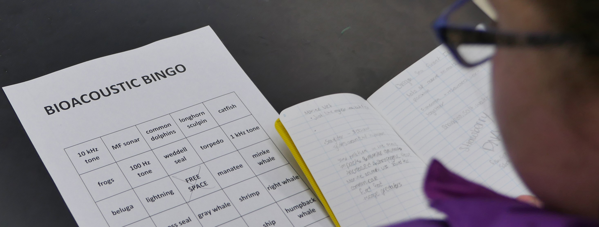
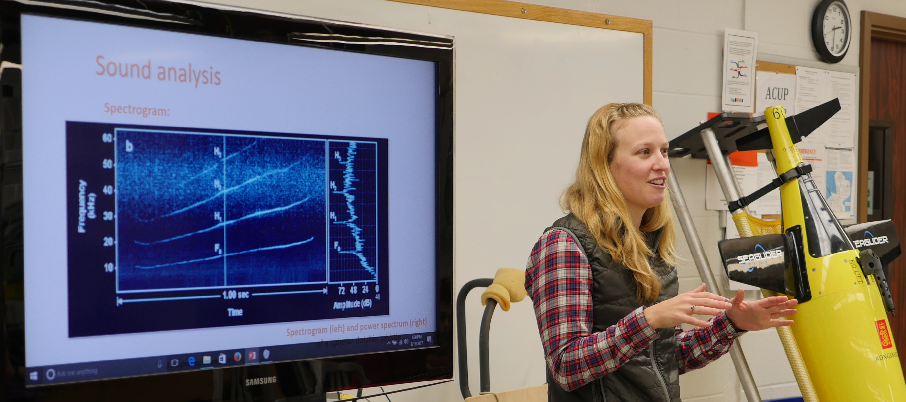

One of my favorite parts of my job is getting to share what I do with the general public! I am able to do this through wonderful programs at Hatfield Marine Science Center, through the Oregon Sea Grant STEM Hub, and on the OSU main campus in Corvallis. Just to highlight a few programs I have been involved in:
I taught Mammalogy and Conservation and Biology of Marine Mammals at OSU.
